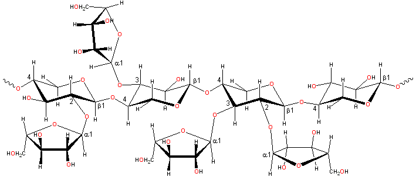

Oats for bran
Arabinoxylans are important functional ingredients in baked products.
Arabinoxylans are found in the bran of grasses (Graminiae).
Representative arabinoxylan structure
Arabinoxylans [230]
consist of α-L-arabinofuranose residues attached as branch-points to β-(1 4)-linked D-xylopyranose polymeric backbone
chains. a These may be 2- or 3-substituted or 2- and 3- disubstituted.
In wheat flour, the distribution of the type of substitution
is not random (contiguous similarly substituted residues being
preferred due to the enzymatic mechanism). However, the distribution
of substituted (irrespective of the substitution type)
residues along the chain appears to be random [575].
The arabinose residues may also be linked to other groups
such as glucuronic acid residues, ferulic acid
cross-links [1634], and acetyl groups [365].
4)-linked D-xylopyranose polymeric backbone
chains. a These may be 2- or 3-substituted or 2- and 3- disubstituted.
In wheat flour, the distribution of the type of substitution
is not random (contiguous similarly substituted residues being
preferred due to the enzymatic mechanism). However, the distribution
of substituted (irrespective of the substitution type)
residues along the chain appears to be random [575].
The arabinose residues may also be linked to other groups
such as glucuronic acid residues, ferulic acid
cross-links [1634], and acetyl groups [365].
The most stable conformations of α-L-arabinofuranose (E3
) and β-(1-4)-linked D-xylopyranose (4C1) residues
The most stable conformations
of α-L-arabinofuranose
(top) and β-(1 4)-linked
D-xylopyranose residues. The furanose can, however,
take up some other conformations with similar energy whereas the chair conformation
of the pyranose residue is fixed. b
4)-linked
D-xylopyranose residues. The furanose can, however,
take up some other conformations with similar energy whereas the chair conformation
of the pyranose residue is fixed. b
[Back to Top  ]
]
Arabinoxylans generally consist of between 1500 - 5000 residues. Fiber studies indicate the molecules take up a twisted ribbon conformation with 3-fold symmetry. However, the free molecules in solution may take up a wide variety of conformations with only moderately extended structures. Although the backbone xylan structure is similar to that occurring in cellulose, there is little driving force to produce crystalline type structures as the intra-molecular and inter-molecular hydrogen bonds associated with the 6-hydroxyl groups are necessarily absent. The presence of arabinose side chains reduces the interaction between the chains due to their inherently more flexible water-hungry furanose conformations. However, where there are sections of disubstituted xylan the chain is relatively inflexible and rod-like. Although relatively unsubstituted areas of the backbone may be able to interact as ribbons with themselves and β-glucans at higher temperatures, such interactions are likely to be relatively weak, and these areas are more likely to form helical entanglements. When the arabinose residues are stripped off the xylan backbone (using oxalic acid), aggregation appears at a Xyl/Ara ratio of about four, and precipitation occurs when this is increased above ten [1387]. The loss of arabinose side chains also correlated with a decline in water binding capacity [1387].
Xylan backbone conformations
The xylan backbone is shown right, with φH (H1C1OC4), ψH (C1OC4H4) torsion angles of (a) 30°,-30°, (21 helix) similar to cellulose but unstable; (b) 57°,-141° (31 helix) forming a 3-fold right-handed helix; (c) 60°, 27° (31 helix) forming a 3-fold left-handed helix. A study using the MM3 force field gives the structures (a) and (c) as the most stable [920].
Putative xylan loop structure showing the hydrophobic cavity
The β-Xylan loop structure (φH, ψH = 176°, 3°) above left shows the hydrophobic cavity produced when this link has the conformation of lowest potential energy. Such structuring behaves similarly to the cyclodextrins in binding materials such as aroma compounds.
There are substantial changes in the structure of the arabinoxylans during bread-making, with changes in its solubility, xylose substitution, and its fine structure [4249].
[Back to Top  ]
]
Wheat and rye arabinoxylans [4261] are essential functional
ingredients in many baked products affecting water
binding and holding, rheology, and starch retrogradation. They also protect the gas retention in dough
due to their viscous influence on gluten-starch films. Arabinoxylans form the active ingredient in Psyllium husk that is used as a laxative [2509]. Unfortunately, psyllium has not proven useful as a fat substitute [4230]. Water
binding is dependent on the arabinose substitution. Where
this is absent, the molecule binds less water and becomes less
soluble, but water is also lost from sections that are 2-.
3-disubstituted where there are steric exclusion effects.
Although there are some reports that the degree of arabinose
substitution has little influence on the overall semi-flexible
conformation (and hence the viscosity),
i
Interactive structures, including the diferulic acid link, are available (Jmol). [Back to Top  ]
]
a Unsubstituted xylans are very rare. Xylan biosynthesis has been reviewed [1464]. [Back]
b The modeling presented on these pages uses Hyperchem with the AMBERS force field. [Back]
Home | Site Index | Hydrocolloids | Polysaccharide hydration | hydrogen-bonding | LSBU | Top
This page was established in 2002 and last updated by Martin Chaplin on 25 June, 2021